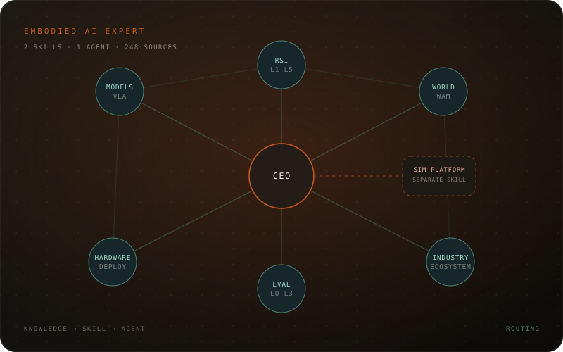

01 / KNOWLEDGE
Build the base.
Five research notes, 248 sources, 30+6 mental models, 30 open questions, a glossary, a radar, and an experience system — all in one repository.
Project · 2026
Two skills, one agent: a broad embodied AI knowledge system, a deep simulation-platform skill, and a router that knows when to call which.

Most AI knowledge tools are static notes. This system is designed to be updated: evidence grades, falsifiers, a weekly radar, predictions, and an experience log. The result is a skill that can explain, judge, and route — not just retrieve.
The architecture is deliberately split. Simulation platform work is deep, versioned, and full of operational traps; it belongs in its own skill. Everything else — models, RSI, world models, data, hardware, deployment, evaluation, industry — belongs in one broad expert skill. The agent only decides which one to load.
Five research notes, 248 sources, 30+6 mental models, 30 open questions, a glossary, a radar, and an experience system — all in one repository.
Two skills with explicit triggers and routing: a broad embodied AI expert and a deep simulation-platform specialist. No duplicated knowledge.
The CEO agent loads the broad skill, calls the simulation skill for platform work, and writes lessons back into the knowledge base.
user
└─ robot-business-unit-ceo (agent)
├─ broad question → robot-business-unit-ceo skill
│ models · RSI · world models · data ·
│ hardware · deployment · evaluation · industry
└─ simulation task → simulation-platform skill
scenes · cameras · physics · L0–L3 ·
model serving · GPU/ops · symptom→cause→fix
The split is intentional: the broad skill stays stable, while the simulation skill can evolve at its own pace.
Every claim is graded A/B/C/D and separated into fact, claim, judgment, and recommendation. Important theses carry a falsifier and an expiry date.
Broad expertise and platform-specific depth have different update rates. Separating them keeps triggers sharp and knowledge maintainable.
Daily scan, weekly deep read, monthly synthesis, quarterly red team. Predictions are logged with probabilities and reviewed, not forgotten.
Real projects become cards: context, decision, alternatives, outcome, surprise, principle, boundary, counterexample. Monthly patterns feed the playbooks.
@misc{li2026embodiedexpert,
title = {A Self-Updating Embodied AI Expert: Two Skills and an Agent},
author = {Li, Shouzhe},
year = {2026},
howpublished = {Project page},
note = {Knowledge system and agent architecture},
url = {https://github.com/ShouzheLi}
}